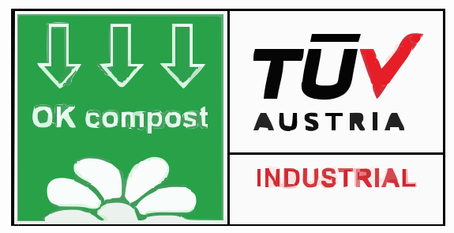

Carbon Footprint Reduction Report
VIKANG Composite Biodegradable Clingwrap for Sustainable Hospitality

 📉 26% Lower Emissions
🏨 Hospitality Ready
📉 26% Lower Emissions
🏨 Hospitality Ready

📉 26% Lower Emissions
🏨 Hospitality Ready
Executive Summary
Bottom Line:
VIKANG Composite Clingwrap delivers a 26% reduction in carbon emissions compared to conventional plastic wrap, cutting approximately 2.3 kg CO₂e per roll. Across the 2025 plan, that's about
2,132 tonnes CO₂e avoided, roughly equal to
removing 463 cars from the road for a year.
Per Roll Savings
2.29
kg CO₂e (26% reduction)
2025 Impact
2,132
tonnes CO₂e avoided
Biodegradable
✓
ASTM D6400 certified
Waste Diverted
56
tonnes shells/year
Product Innovation
VIKANG Composite: Plant-based biodegradable clingwrap incorporating upcycled cashew shell technology (Vietnam → China), certified biodegradable with antimicrobial properties (ASTM D6400).
Strategic Value
- Regulatory: Aligns with EU Single-Use Plastics Directive & Australia's National Plastics Plan
- SDG Impact: 75% operational alignment for SDG 12 (Responsible Consumption) & SDG 13 (Climate Action)
- Supply Chain: Upcycled plant-based components, zero-waste model: In the future
Key Assumptions & Limitations
Internal prework based on ASTM D6400 & LCA principles. Data needs: Intersnack shell disposal methods (assumes 100% landfill), real-world EU/Australia disposal data, internal production emissions. ISO 14040 audit planned.
Sensitivity: Savings range 1.50–2.80 kg CO₂e/roll depending on biodegradation conditions (20–50%), disposal mix, and production optimization.
Company Background & Product Specifications
N&E Innovations Profile
Singapore startup targeting hotel chains in Southeast Asia/ Europe & Australia, addressing hospitality's 19M tonnes annual plastic waste (Ellen MacArthur Foundation, 2017).
Technical Specifications
| Parameter | Value | Source |
|---|---|---|
| Roll Weight | 2.58 kg | N&E internal, 2025 |
| Plant-Based Component | Upcycled cashew shells | Formulation |
| Biodegradability | Certified biodegradable | ASTM D6400, Beijing Zhongke, 2025 |
| Test Conditions | Industrial composting | 58°C±2°C, aerobic, 180 days |
| Antimicrobial Properties | Natural plant-based | Product formulation |
| Conventional Plastic Wrap | Non-biodegradable | PlasticsEurope, 2023 |
Method: Dt = [(CO₂)T - (CO₂)B] / ThCO₂ × 100%
Supply Chain Map
Vietnam → China → Global Markets
Upcycling: Cashew shell waste from Vietnamese farms integrated into composite formulation. Zero-waste processing model.